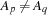
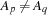
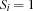
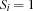
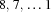

8.2 Example: Aligning for a Photo
We will now see an overconstrained problem for which it is impossible to satisfy all constraints. The problem specification will distinguish between primary and secondary constraints, and the goal is to find a solution that satisfies all primary constraints and as many of the secondary constraints as possible.
Problem Specification
Betty, Chris, Donald, Fred, Gary, Mary, and Paul want to align in one row for taking a photo. Some of them have preferences next to whom they want to stand:
Betty wants to stand next to Gary and Mary.
Chris wants to stand next to Betty and Gary.
Fred wants to stand next to Mary and Donald.
Paul wants to stand next to Fred and Donald.
Obviously, it is impossible to satisfy all preferences. Can you find an alignment that maximizes the number of satisfied preferences?
Model
The model has a variable  for every person, where stands for the position
for every person, where stands for the position  takes in the alignment. Since there are exactly 7 persons, we have
takes in the alignment. Since there are exactly 7 persons, we have  for every person . Moreover, we have  for every pair ,
for every person . Moreover, we have  for every pair , of distinct persons. The model has a variable
of distinct persons. The model has a variable  for each of the 8 preferences, where  if and only if the
for each of the 8 preferences, where  if and only if the  -th preference is satisfied. To express this constraint, we constrain the control variable
-th preference is satisfied. To express this constraint, we constrain the control variable  of a preference ``person wants to stand next to person '' by means of the reified constraint
of a preference ``person wants to stand next to person '' by means of the reified constraint
Finally, there is a variable

denoting the number of satisfied preferences. We want to find a solution that maximizes the value of .
The experienced constraint programmer will note that we can eliminate a symmetry by picking two persons and and imposing the order constraint  .
.
Distribution Strategy.
To maximize , we employ a two-dimensional distribution strategy, which first distributes on , trying the values  in this order. Once is determined, we distribute on the variables using a first-fail strategy that splits the domain of the selected variable.
Script.
proc {Photo Root}
Persons = [betty chris donald fred gary mary paul]
Preferences = [betty#gary betty#mary chris#betty chris#gary
fred#mary fred#donald paul#fred paul#donald]
NbPersons = {Length Persons}
Alignment = {FD.record alignment Persons 1#NbPersons}
Satisfaction = {FD.decl}
proc {Satisfied P#Q S}
{FD.reified.distance Alignment.P Alignment.Q '=:' 1 S}
end
in
Root = r(satisfaction: Satisfaction
alignment: Alignment)
{FD.distinct Alignment}
{FD.sum {Map Preferences Satisfied} '=:' Satisfaction}
Alignment.fred <: Alignment.betty % breaking symmetries
{FD.distribute generic(order:naive value:max) [Satisfaction]}
{FD.distribute split Alignment}
end
Figure 8.1: A script for the Photo Puzzle.
The script in Figure 8.1 constrains its root variable to a record consisting of the number of satisfied preferences and a record mapping the names of the persons to their positions in the alignment. The fields of the record Alignment implement the variables of the model.
Satisfied
The script introduces the defined constraint {Satisfied P#Q S}, which implements the reification of the constraint ``P stands next to Q'' with respect to S.
The statement
{FD.sum {Map Preferences Satisfied} '=:' Satisfaction} constrains the variable Satisfaction to the number of satisfied preferences.
The statement {ExploreOne Photo} will run the script until a first solution is found. The first solution satisfies 6 preferences and looks as follows:
6 # alignment(betty:5 chris:6 donald:1 fred:3
gary:7 mary:4 paul:2)By construction of the script, this is the maximal number of preferences that can be satisfied simultaneously.
Exercises
Exercise 8.3 (See solution)
Modify the script such that the first solution minimizes the number of preferences satisfied.